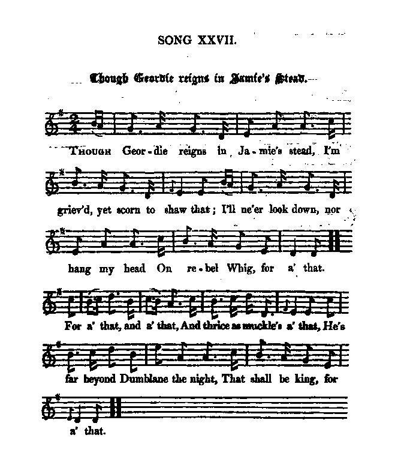

Two songs to the same tune:
1° Though Geordie reigns in Jamie's stead
Bien que Georges règne à la place de Jacques.
1° from J. Ritson's "Scotish Songs", vol. II, p.102 (class III, N°28), 1794, who took it from a collection of "Loyal Songs, &c.", 17502° from Hogg's "Jacobite Relics" 2nd Series N°27, page 55, 1821, from Mr. Moir's MSS,
There is still another version of the same song in "The True Loyalist", page 21 (1779).
The song was composed after the retreat from Stirling, possibly after Culloden;
Tune - Mélodie
"For a' that"
from Hogg's "Jacobite Relics" 2nd Series N°27, page 55, 1821
Sequenced by Christian Souchon
|
To the tune:
- This very popular tune, "For a' that" , first appears in print , as "Lady McKintosh's reel" , in Robert Bremner's "Collection of Scots reels and country-dances" in 1757 (see Lament for Lady McKintosh ), - then as "There's nae luck aboot the hoose" in James Aird's 1782 collection (No. 198). As stated by Hogg in a note to the song "From Bogie Side" : "The air to which it is set, approaches nearly to a reel called " The Lasses of Stewarton," but it sings fully better to "There's nae Luck about the House," which indeed differs but slightly from the other ." The words of the 1st song ("That Georgie reigns in Jamie's stead") first appear, according to Bruce Olson, in the manuscript NLS MS 2910 (c 1730? -40's?), - then in "A Collection of Loyal Songs, Poems", 1750. - An (older?) Gaelic song " An gille dubh mo laochan " is also sung to this tune: "An gille dubh gur fad’ amuigh, An gille dubh, mo laochan; (bis) Cha toirinn bainne ghobhar dhuit, Na idir bainne chaorach, Oir leam gur math an airidh thu, Air bainne chruidh’s na laoigh thu." Though its author had used it in two earlier songs ("Tho' Women's Mind" and "I am a bard of no regard" - and was to use it once more, in 1795, in an electoral song, "Whom will we send to London Town?"), the tune was made famous by Robert Burns' egalitarian poem, "A man's a man for a' that" , (also known after its first line "Is there for honest poverty" ), whereby Burns "inverted into rhyme... two or three good prose thoughts" from Thomas Paine's essay "Rights of Man", to whom he refers when he sent the song to his editor George Thomson (1795). This song, translated in 1843 by the German Ferdinand Freiligrath as "Trotz alledem" was to have numerous offspring with which his country's repertoire of political songs was remarkably enriched! Source "The Fiddler's Companion" (cf. Links). |
 |
A propos de la mélodie:
- Cette mélodie très populaire, "Malgré tout" , est imprimée pour la 1ère fois, sous le titre "Reel de Lady McKintosh" , par Robert Bremner dans sa "Collection de contredanses et de reels écossais" en 1757 (cf. aussi Eloge funèbre de Lady McKintosh ), - puis, en 1782, sous le titre " La chance déserte ce logis " et le N°198, dans la collection de James Aird. Comme le note Hogg à propos de "From Bogie Side" : "L'air sur lequel cette pièce se chante ressemble fort à un reel appelé "Les filles de Stewarton", mais il est bien mieux adapté au chant intitulé "La chance déserte ce logis", qui n'est d'ailleurs guère différent. " Les paroles du 1er chant ("Que Georges règne au lieu de Jacques") furent publiées tout d'abord, selon Bruce Olson, dans le manuscrit NLS MS 2910 (c 1730? -40's?), - puis dans "Recueils de Chants loyaux, poèmes", 1750. - Un chant gaélique (plus ancien?), "An gille dubh mo laochan" , utilise aussi cette mélodie: "Le jeune homme brun est bien loin d'ici, Le jeune homme brun, mon héros; (bis) Je n'irai pas traire la chèvre pour toi, Mais bien plutôt la brebis, Et j'estime que tu mérites Mieux que le lait que boit le poulain: celui que boit le veau." Bien que son auteur l'ait utilisée auparavant dans deux autres chants ("L'esprit des femmes" et "Je suis un barde sans importance" - et devait l'utiliser une fois de plus, en 1797, dans un chant électoral, "Qui allons-nous envoyer à Londres?"), la mélodie doit son succès au poème égalitariste de Robert Burns, "Un homme reste un homme" , (connu aussi d'après sa 1ère ligne, " Y a-t-il pour le pauvre honnête... "). Burns "y met en vers...deux ou trois idées intéressantes formulées en prose" par Thomas Payne dans son "Essai sur les droits de l'homme", auquel il se réfère lorsqu'il envoie son texte à George Thomson en 1795. Ce chant, traduit en 1843 par l'Allemand Ferdinand Freiligrath sous le titre "Trotz alledem" était destiné à avoir une nombreuse postérité qui enrichit singulièrement le répertoire des chants politiques de son pays! Source "The Fiddler's Companion" (cf. Links). |

|
THO' GEORDIE REIGNS IN JAMIE'S STEAD
1. Tho' Geordie reigns in Jamie's stead, [1] I'm griev'd, yet scorn to shaw that; I'll ne'er look down, nor hang my head On rebel Whig for a' that. For still I trust that providence Will us relieve from a' that; Our royal prince is weal in health, And will be here for a' that. For a' that, and a' that, And thrice as muckle's a' that, - He's far beyond the sea the night, - Yet he'll be here, for a' that. 2. He's far beyond Dumblain the night, [2] Whom I love weel for a' that; He wears a pistol by his side, That makes me blyth for a' that; The Highland coat, the philabeg, The tartan hose, and a' that; And tho' he's o'er the seas the night, He'll soon be here for a' that. For a' that, &c. 3. He wears a broadsword by his side, And weel he kens to draw that; The target, and the Highland plaid, The shoulder-belt, and a' that; A bonnet bound with ribbons blue, The white cockade, and a' that, And tho' beyond the seas the night, Yet he'll be here for a' that. For a' that, &c. 4. The Whigs think a' that weal is won, But, faith, they ma' na' fa' that; They think our loyal hearts dung down, But we'll be blyth, for a' that. For a' that, &c. 5. But O what will the Whigs say syne, When they're mista'en in a' that ? When Geordie mun fling by the crown, His hat, and wig, and a' that? The flames will get baith hat and wig, As often they've done a' that; [3] Our Highland lad will get the crown, And we'll be blyth, for a' that. For a' that, &c. 6. O! then your bra' militia lads Will be rewarded duly, When they fling by their black cockades, [4] A hellish colour truly: As night is banish'd by the day, The white shall drive awa that; The sun shall then his beams display, And we'll be blyth for a' that. For a' that, &c. Source: J. Ritson's "Scotish Songs", vol. II, p.102 (class III, N°28), 1794, who took it from a collection of "Loyal Songs, &c.", 1750 |
THOUGH GEORDIE REIGNS IN JAMIE'S STEAD
(1.) Though Geordie reigns in Jamie's stead, [1] I'm griev'd, yet scorn to shaw that; I'll ne'er look down, nor hang my head On rebel Whig for a' that. (3-2.) For still we trust that Providence Will us relieve from a' that, And send us hame our gallant prince; Then we'll be blythe, for a' that. For a' that, and a' that, And thrice as muckle's a' that, He's far beyond Dunblane the Knight, [2] That shall be king, for a' that. (2.) He wears a broad sword by his side, And weel he kens to draw that; The target, and the Highland plaid, The shoulder-belt, and a' that; A bonnet bound with ribbons blue, The white cockade, and a' that, The tartan hose and philabeg, Which makes us blythe, for a' that. (3-1.) The Whigs think a' that weal is won, But, faith, they maunna fa' that; They think our loyal hearts dung down, But we'll be blythe, for a' that. (4.) But O what will the Whigs say syne, When they're mista'en in a' that ? When Geordie maun fling by the crown, And hat, and wig, and a' that? [3] The flames will get baith hat and wig, As often they've done a' that; Our Highland lad will get the crown, And we'll be blythe, for a' that. Source: "The Jacobite Relics of Scotland, being the Songs, Airs and Legends of the Adherents to the House of Stuart" collected by James Hogg, published in Edinburgh by William Blackwood, volume II in 1821. |
AU LIEU DE JACQUES GEORGE EST ROI
(1.) Au lieu de Jacques, George est roi [1] Et j'en souffre en silence, Mais cache bien mon désarroi Aux Whigs, en leur présence. (3-2.) La Providence, c'est certain, Mettra fin à l'épreuve. Le retour de ce vaillant Prin- Ce en fournira la preuve. Le destin va nous revaloir Trois fois toutes nos peines: - La mer retient Charles ce soir: - Il reviendra quand même. Dunblade est loin du Chevalier [2] Qui sera roi quand même. 2. Dunblade, c'est si loin ce soir Et malgré tout je l'aime. Le pistolet qu'il laisse voir, Me rassure quand même. Son kilt, ses bas de Montagnard, Son plaid de tiretaine... La mer le tient au loin, ce soir: Que le jour le ramène! Le destin va... (2.) S'il porte un broadsword au côté, Ce n'est pas pour la frime: Bouclier rond, plaid relevé L'apprêtent à l'escrime; Bonnet orné de bleus rubans, Belle cocarde blanche, Kilt et culotte de tartan: Vivement la revanche! Le destin va... (3-1.) Si le Whig pense avoir gagné, Ce n'est là qu'un mirage. Quand il nous croit découragés, C'est à notre avantage. Le destin va... (4.) Que diront les Whigs une fois Leurs illusions perdues? Quand Geordie sans couronne aura La tête toute nue! Chapeau, perruque iront au feu, Comme ils savent le faire. [3] La couronne sera pour le Garçon des Hautes Terres! Le destin va... 6. Alors, vos fringants miliciens Auront ce qu'ils méritent, Jetant cocarde noire au loin, [4] La couleur diabolique! La nuit fuira devant le jour: Et la teinte funèbre Au blanc fera place. A leur tour S'enfuiront les ténèbres. Le destin va... (Trad. Christian Souchon (c) 2010) |
|
[1] "One [song] that has often been published, and, owing to the genuine simplicity of the air, always popular. This set is copied from Mr Moir's MSS. though I think I have heard a better one." (Hogg in "Jacobite Relics,Vol.II").
In spite of its incomplete 4th verse, a better version might be found in J. Ritson's "Scotish Songs" (1794), which embodies the oppositon Jacobites - Hanoverians in the striking contrasts : white cockade vs. black cockade, dark night vs. bright daylight... [2] Dumblain is for "Dunblade", the resounding victory of the Prince's army over John Cope, also known as "Prestonpans". [3] "The flames will get baith hat and wig" alludes to a ludicrous custom of king George II, who, when suddenly irritated, was wont to kick his hat and wig about the room, and throw it into the fire. The scholar, Benjamin Loveling, quoted by Ritson, described it in a Latin poem "Ad Carolum B." in 1741: Concinet majore poeta plectro ---------, quandoque calens furore Gestiet circa thalamum ferire Calce galerum. [4] Black cockades : While a white cockade was worn by the Jacobites, in contrast the Hanoverians had one that was all black. |
[1] "Ce chant a été souvent publié et la simplicité de la mélodie a assuré son succès. Cette version est celle du manuscrit de M. Moir, bien que je ne croie pas que ce soit la meilleure." (Hogg dans "Reliques Jacobites, Vol.II").
Malgré sa 4ème strophe incomplète, une meilleure version est sans doute celle de J. Ritson dans ses "Chants écossais" de 1794, qui exprime l'opposition Jacobites - Hanovriens au moyen de contrastes frappants : cocarde blanche contre cocarde noire, nuit sombre contre jour radieux... [2] Dumblain (dans l'original) est "Dunblade", l'éclatante victoire Jacobite de Prestonpans. [3] "Les flammes auront son chapeau, sa perruque" fait allusion à un tic du roi Georges, lequel quand il était énervé, avait coutume d'arracher sa perruque et de la jeter au feu avec rage." (Hogg dans "Reliques Jacobites, Vol.II"). Cf. le poème latin "Ad Carlum B." de 1741, de l'érudit Benjamin Loveling , cité par Ritson: Poète, il te faudra ta grande lyre prendre, Pour chanter [Georges] qui, s'il brûle de fureur Ne peut se retenir tout autour de la chambre De chasser sa coiffure à coups de pied vengeurs. [4] Cocardes noires : en réponse aux cocardes blanches des Jacobites, les Hanovriens arboraient une cocarde toute noire. |
2° Scotland's Call
L'appel de l'Ecosse
By R. Jamieson
The Landing of the Prince in
Moidart
From Hogg's Jacobite Relics, Volume II", N°AJ 9, page 408, 1821
<
|
SCOTLAND'S CALL
MODERN (in 1821) 1. Be kind to me as lang's I'm yours; I'll maybe wear awa yet, He's coming o'er the Highland hills, May tak me frae you a' yet. He's coming here, he will be here ; He's coming here for a' that, He's coming o'er the Highland hills, May tak me frae you a' yet. 2. The arm is strong where heart is true, And loyal hearts are a' that;— Auld love is better aye nor new ;— Usurpers maunna fa' that. He's coming here, &c. 3. The king is come to Muideart bay, And mony bagpipes blaw that; And Caledon her white cockade, And gude claymore may shaw yet, He's coming here, &c. 4. Then loudly let the piobrach sound, And bald advance each true heart; The word be, " Scotland's King And Law!" And " Death Or Charlie Stuart !" He's coming here, he will be here, He's coming here for a' that, He's coming o'er the Highland hills May tak me frae you a' yet. Source: "The Jacobite Relics of Scotland, being the Songs, Airs and Legends of the Adherents to the House of Stuart" collected by James Hogg, volume II published in Edinburgh by William Blackwood, Song AJ 9, page 408. |
L'APPEL DE L'ECOSSE
MODERNE (en 1821) 1° Mes amis, je ne suis près de vous Plus pour longtemps peut-être. Il va franchir les Highlands pour Que je suive mon maître. Il va venir, il va venir, Il va venir quand même. Franchissant les Highlands pour que Le suivent ceux qui l'aiment! 2. Le bras est fort quand le cœur est pur, Que le zèle l'anime. Vieil amour vaut mieux que neuf. L'usur- pateur fait grise mine. Il va venir, etc. 3. Le roi débarque en baie de Moidart Au son des cornemuses. L'Ecosse lève ses étendards. Partout les hourras fusent. Il va venir, etc. 4. Que le pibroch résonne bien fort! Que les braves s'avancent! Libérons l'Ecosse, ou que la mort Soit notre récompense! Il va venir, il va venir, Il va venir quand même. Franchissant les Highlands pour que Le suivent ceux qui l'aiment! (Trad. Christian Souchon (c) 2010) |
|
"This song is by R. Jamieson, Esq. the first verse and burden only being old. It alludes to the landing of the Prince in Moidart, as thus hailed in the burden of a Gaelic song:—
Gu'n d'thanig an Righ air tir i Mhuideart, Tha d'ait ag cradhin, tha d'ait ag cradhin, Gu'n d'thanig an Righ air tir i Mhuideart, Righ nan Gaidheal, Righ nan Gaidheal." (Now that the King landed in Moidart, It's the end of our pains, It's the end of our pains, Now that the King landed in Moidart. The King of the Gaels, the King of the Gaels!) (Hogg's remark to this song.) A similar song with the burden "For a' that and a' that" and lyrics with roughly subversive import was included by John Ord in his "Bothy Songs of Aberdeen, etc..." published in 1930. It could be the old song mentioned by Hogg on which R. Jameson elaborated to compose his own modern Jacobite song. It stages the classical couple: Highland lad - Lowland lass . The lyrics read thus: |
"Ce chant est de M. R. Jamieson. Seuls le 1er couplet et le refrain sont anciens. Le chant a trait au débarquement du Prince à Moidart que le refrain d'un chant gaélique salue ainsi:-
Gu'n d'thanig an Righ air tir i Mhuideart, Tha d'ait ag cradhin, tha d'ait ag cradhin, Gu'n d'thanig an Righ air tir i Mhuideart, Righ nan Gaidheal, Righ nan Gaidheal." (Voici que le roi débarque à Moidart! Finis nos malheurs, finis nos malheurs! Voici que le roi débarque à Moidart! Le roi des Gaëls, le roi des Gaëls!). (Remarque de Hogg à propos de ce chant.) Un chant semblable présentant le refrain "For a' that and a' that" et des paroles vaguement subversives commençant par "Ménagez-moi tant que je suis ici" figure dans le recueil de John Ord intitulé "Chants de buron d'Aberdeen, etc..." paru en 1930. Il pourrait s'agir du chant ancien dont parle Hogg et qui a servi de canevas pour le chant jacobite moderne de R. Jameson. Il met en scène le couple classique: Highland lad - Lowland lass . En voici les paroles: |
|
1. Be gude to me as lang’s I’m here,
I’ll maybe win awa’ yet; He’s bonnie coming o’er the hills, That will tak’ me frae ye a’ yet. For a’ that and a’ that, And thrice as muckle’s a’ that; He’s bonnie coming o’er the hills, That will tak’ me frae ye a’ yet. 2. He wears a bonnet for a hat, A napkin for a gravat, He wears a jacket for a coat, But he’ll be mine for a’ that. For a’ that and a’ that, And twice as muckle’s a’ that, He’s coming here and will be here, To tak’ me frae ye a’ yet. 3. And maybe I’ll hae hose and sheen, When ye maun a’ gang barefit; And maybe I’ll gang neat and clean, When ye gang wet and drablit; For a’ that and a’ that, And thrice as muckle’s a’ that; Ye’ll maybe sit in my cot-town, When I sit in my ha’ yet. 4. There’s nane o’ you been gude to me, But I’ll reward ye a’ yet, You’ll maybe need a peck o’ meal When I can gie ye twa yet; For a’ that and a’ that, And thrice as muckle’s a’ that, I’ll hae fine kilns, and fine meal mills, And muckle mair than a’ that. Source: David Robb, Eckhard John: „For a’ that“ und „Trotz alledem“. Robert Burns, Ferdinand Freiligrath und ihre Rezeption in der deutschen Folkbewegung (2009). In: Populäre und traditionelle Lieder. Historisch-kritisches Liederlexikon. URL: www.liederlexikon.de/lieder/trotz_alledem/liedkommentar.pdf |
1. Ménagez-moi, je vous prie: d'ici
Je m'en irai peut-être; D'au-delà les monts vient mon ami Et je vais fuir ces aitres. Oui, malgré tout, oui, malgré tout Et trois fois malgré tout D'au-delà les monts vient mon ami Je m'en vais disparaître. 2. Un bonnet en guise de chapeau, Un mouchoir pour cravate, Sa veste lui tient lieu de manteau: Il m'aime. Que m'importe! Et malgré tout, et malgré tout Et deux fois malgré tout Il approche celui qui bientôt Loin de ces lieux m'emporte. 3. Peut-être a-t-il chausses et souliers: Pieds-nus ici l'on marche. Quand vous irez trempés et mouillés, Je serai nette et propre. Oui, malgré tout, oui, malgré tout, Oui, trois fois malgré tout, A vous, sur mes terres, le hameau, A moi la salle et l'âtre! 4. Nul d'entre vous pour moi n'eut d'égards, Mais je tiens ma revanche: Plus de farine dans vos placards: J'en ai deux sacs, mais penche A les garder, oui, malgré tout Et trois fois, malgré tout Avec mes fours et mes moulins, C'est tous les jours dimanche! Traduction: Christian Souchon (c) 2012 |